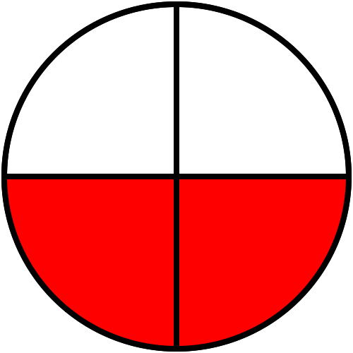
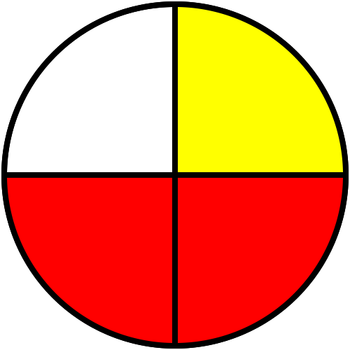

|
Chapitre 3
|
|
Partie 3
|
- Additions de fractions
|
Rappels :
Un quotient ne change pas lorsque l'on multiplie (ou divise) son numérateur et son dénominateur par un même nombre (non nul).
Soit k$\neq0$ :
$\frac{a}{b}=\frac{a\ \times\ \textcolor{#e53935}{k}}{b\ \times\ \textcolor{#e53935}{k}}$
et
$\frac{a}{b}=\frac{a\ \div\ \textcolor{#e53935}{k}}{b\ \div\ \textcolor{#e53935}{k}}$
Somme de fractions :
Même dénominateur :
Propriété :
Pour effectuer la
somme (ou la
différence) de deux nombres en écriture fractionnaire de même dénominateur :
- On garde le dénominateur commun;
- On additionne (ou on soustrait) les numérateurs.
Exemples :
-
| $\frac{2}{4}$ |
+ |
$\frac{1}{4}$ |
= |
$\frac{2+1}{4}=\frac{3}{4}$ |
|  |
+ |
|
= |
 |
-
$\frac{7}{31}+\frac{16}{31}=\frac{7+16}{31}=\frac{23}{31}$
Dénominateurs différents
Lorsque deux fractions ne sont pas de même dénominateur, on commence par les modifier avant de les ajouter. Pour cela on utilise des fractions égales.
Exemples :
- $\frac{7}{8}+\frac{33}{24}=\frac{7}{8}+\frac{33\ \textcolor{#e53935}{\div\ 3}}{24\ \textcolor{#e53935}{\div\ 3}}=\frac{7}{8}+\frac{11}{8}=\frac{7 + 11}{8}=\frac{18}{8}$
- $\frac{5}{3}+\frac{8}{15}=\frac{5\ \textcolor{#e53935}{\times\ 5}}{3\ \textcolor{#e53935}{\times\ 5}}+\frac{8}{15}=\frac{25}{15}+\frac{8}{15}=\frac{25 + 8}{15}=\frac{33}{15}$